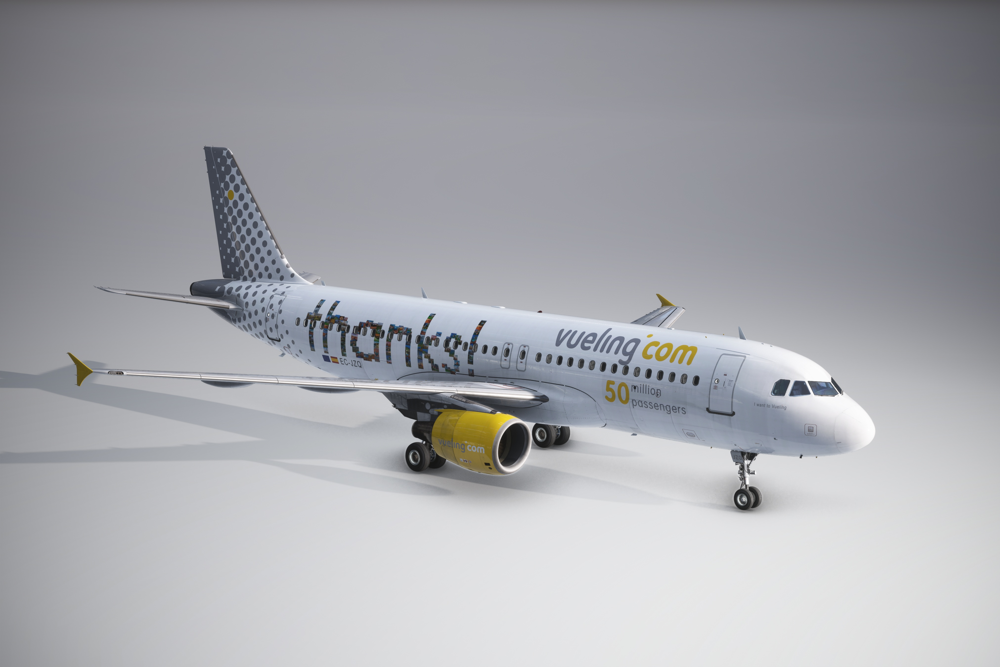
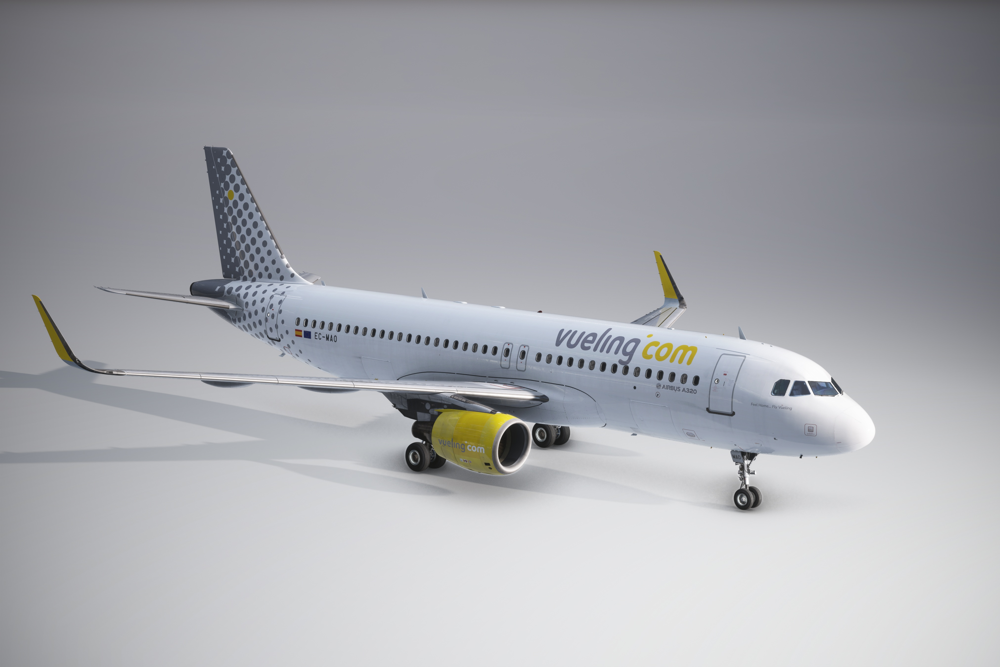
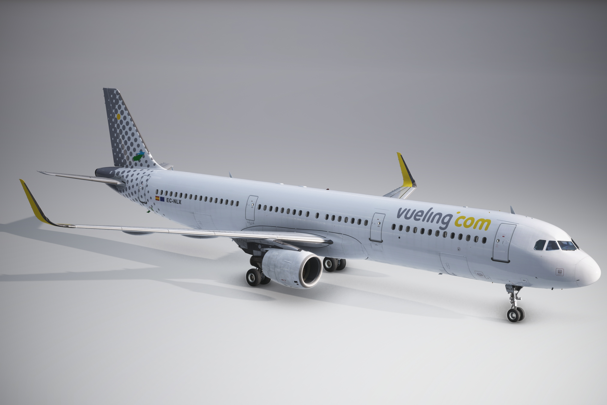
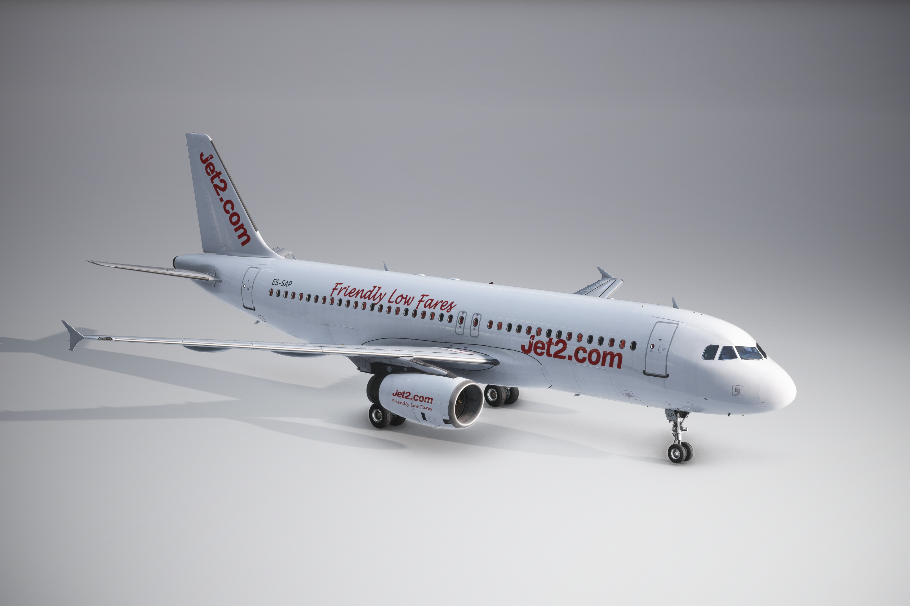

NEWLY RELEASED

Vueling EC-MAI
A new era. The Airbus A320 EC-MAI labeled “JUDIT MELER” arrives with many surprises. First, I’m pleased to present the new cabin interior design, with updated seatbacks, safety cards, menu magazines, and more, all refreshed to bring more realism to the game. Second, the weathered fuselage and sun-worn engines give the aircraft a professional and detailed look DOWNLOAD
NEW

Vueling EC-LUO
Athletic Club Livery special that pays tribute to the Athletic Club de Bilbao. It features the team's red and white colors, along with its crest, in a unique combination that stands out in the sky DOWNLOAD

Vueling EC-JZQ
“Gracias” Edition Design with the message “gracias” on the fuselage, accompanied by the branding of Vueling.com. A simple yet emotional repaint, ideal for flights with a touch of gratitude DOWNLOAD
NOT AVAILABLE

Vueling EC-MAH
Tribute to Toni Rubio, honoring Commander Toni Rubio with the inscription: “Comandante Toni Rubio, volaremos siempre juntos”. An emotional reminder that accompanies every flight through European skies DOWNLOAD

Vueling EC-MAO
Inaugural Barcelona–Tromsø The Airbus A320 EC-MAO was responsible for inaugurating Vueling's new route in December 2024 between Barcelona and Tromsø. This aircraft features the “Feel Home Fly Vueling” livery and includes a customized interior, with themed headrests and exclusive details celebrating the launch of this special connection DOWNLOAD
Vueling EC-MLD
Details that make the difference. The Airbus A321 EC-MLD, equipped with IAE engines, features a high-fidelity Vueling livery and a customized interior. Includes themed headrests, safety and food cards, service carts, and real Spanish and English stickers. Also features authentic wear effects on fuselage and engines, offering a visually immersive experience for simulation enthusiasts DOWNLOAD
Vueling EC-MOO
Realism and detail in every flight. The Airbus A321 EC-MOO with IAE engines features a high-resolution Vueling livery and a fully customized cabin. Includes themed headrests, safety and food cards, service carts, and real Spanish and English stickers. Also features authentic wear effects on engines and fuselage, and is compatible with GSX Passenger Seats, offering an immersive experience for Flight Simulator DOWNLOAD

Vueling EC-NLX Hybrid
HHybrid with history. The Airbus A321 EC-NLX, previously part of the LEVEL fleet, now flies with Vueling sporting a hybrid livery that combines elements from both brands. This simulator version includes 8K textures, customized cabin stickers (such as CAT III and maintenance in progress), Vueling seats with safety and food cards, and service carts. All of this features realistic wear effects on the fuselage and engines DOWNLOAD

Jet2.com ES-SAP
British season in high definition. The Airbus A320 ES-SAP, operated by Jet2 with IAE engines, features a temporary livery in white and red tones, faithfully representing the British airline’s style. This Flight Simulator version includes 8K textures, a detailed cabin, and custom elements that recreate the full Jet2 experience DOWNLOAD